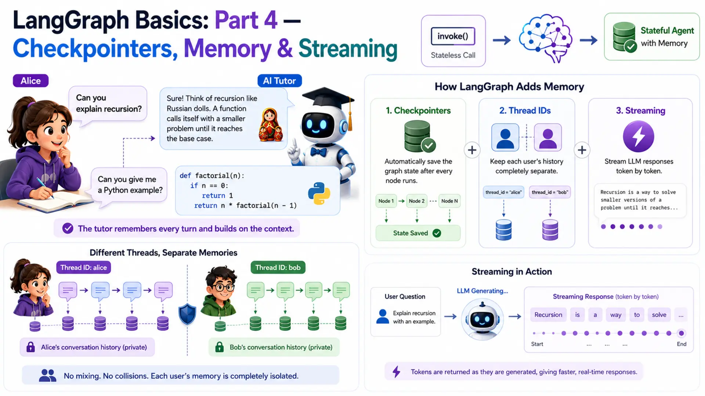
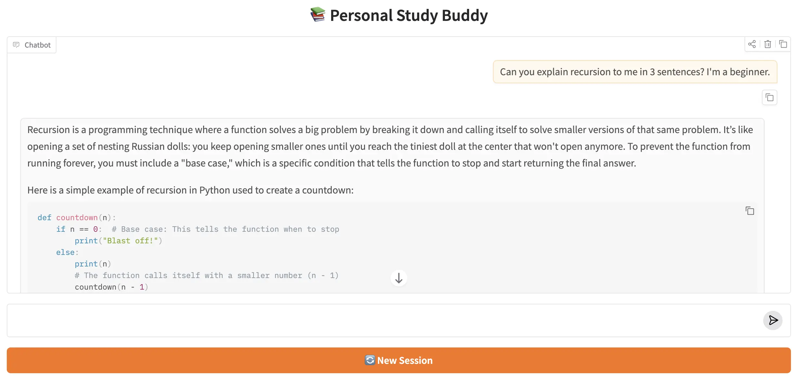

LangGraph Basics: Part 4 — Checkpointers, Memory & Streaming

📚 Table of Contents
- 1. What is Persistence — and Why Do We Need It?
- 2. Installation & Setup
- 3. Checkpointers — The Memory Engine
- 3.1 What is a Checkpointer?
- 3.2 How Checkpointing Works Internally
- 3.3 MemorySaver — In-Process Storage
- 3.4 SqliteSaver — File-Based Persistence
- 3.5 MemorySaver vs SqliteSaver
- 4. Thread IDs — Keeping Conversations Separate
- 4.1 What is a Thread?
- 4.2 The config Dictionary
- 4.3 Two Threads in Action
- 4.4 Inspecting Saved State
- 5. invoke() vs stream() — Two Ways to Run a Graph
- 5.1 invoke() — Wait for the Final Result
- 5.2 stream() — Watch the Graph Think
- 5.3 stream_mode="values"
- 5.4 stream_mode="updates"
- 5.5 stream_mode="messages"
- 5.6 Choosing the Right Mode
- 6. Complete Example: Personal Study Buddy
- 6.1 Scenario & Architecture
- 6.2 State Design (state.py)
- 6.3 The Chat Node (nodes.py)
- 6.4 Building the Graph (graph.py)
- 6.5 The Runner (study_runner.py)
- 6.6 Console Output Walkthrough
- 6.7 Upgrading to SqliteSaver
- 7. Web UI with Gradio
- 8. Conclusion
🧠 1. What is Persistence — and Why Do We Need It?
Imagine a student named Alice who is learning programming. She asks her AI tutor: "Can you explain recursion?" The tutor gives a brilliant answer with a great analogy. Alice follows up: "Can you give me a Python example?" And the tutor — having zero memory of the first question — responds with something completely disconnected. Alice has to re-explain her context every single turn. That's not a tutor. That's a goldfish.
This is the exact problem we solve in Part 4. Every LangGraph graph built so far in this series was stateless — the entire state lived only for the duration of one invoke() call. The moment the call returned, all that data was thrown away. The next call started completely from scratch, with no knowledge of anything that came before.
LangGraph solves this with three interlocking features. First, checkpointers — a built-in persistence layer that automatically saves the graph's state after every node runs. Second, thread IDs — identifiers that keep different users' histories completely separate. Third, streaming — a way to surface LLM responses token by token as they are generated, instead of waiting for the full reply. Together, these three turn a stateless graph into a true conversational agent.
🐟 The Stateless Graph Problem
Let's prove the problem is real. Take a minimal graph and invoke it twice with related questions. The state carries no knowledge across calls:
The second call has no access to the first result. From the graph's perspective, "Give me a Python example" is the very first message ever sent. The context Alice carefully built up vanishes between calls.
⚠️ Why this matters beyond chatbots: state loss between calls breaks multi-step workflows too. An agent that approves expenses in step one will have no record of that approval in step two. A document processing pipeline that tags a file in step one can't use that tag in step three. Persistence is not just a chatbot feature — it's required for any graph that spans more than a single request.
Now compare the same two calls on a graph compiled with a checkpointer and a thread ID:
Same graph. Same node. Same LLM. The only difference is three things: a checkpointer attached at compile time, and a thread_id passed in the config. That's the magic — and the rest of this post explains exactly how it works.
🌍 Real-World Scenarios That Need Memory
Stateless graphs work fine for one-shot tasks — "summarise this paragraph", "translate this sentence". But most real products need something more:
AI Tutors & Study Assistants
Students ask follow-up questions that only make sense in context of what was explained earlier. The tutor must remember every question and answer to build on them.
Customer Support Threads
A customer files a ticket and adds follow-up details across multiple messages. The agent needs to track the full complaint history, not just the latest message.
Coding Assistants
"Fix the bug in the function I wrote earlier" — the assistant must remember what code was written, what language, and what error was reported in previous turns.
Resumable Workflows
A multi-step approval process that spans hours or days. If the server restarts, the workflow must resume exactly where it left off — not from the beginning.
Our example for this post is the AI study buddy. Alice can ask questions across multiple turns — and the tutor remembers every single one. Meanwhile, another student Bob runs a completely independent session: his questions and the tutor's answers are stored under a different thread and never mix with Alice's.
⚙️ 2. Installation & Setup
If you followed Parts 1–3, your environment is already set up — Part 4 adds no new packages. If this is your first post in the series, follow all steps below.
Python version. This project requires Python 3.12.
Create and activate a virtual environment.
Install dependencies. All packages for the series live in one shared requirements.txt at the root of the langgraph/ folder:
Gemini API key. Get your free API key from Google AI Studio, then create a .env file at the root of the langgraph/ folder:
⚠️ Never commit your .env file to version control. Add .env to .gitignore before your first commit.
Project structure. Part 4 lives in its own folder inside langgraph/:
config.py and llm.py are identical to previous parts (Section 2.1). state.py introduces the add_messages reducer (Section 6.2). nodes.py holds the single chat node and loads its system prompt from prompts/study_buddy.txt at init (Section 6.3). graph.py wires the checkpointer and exposes save_figure() to export the graph diagram (Section 6.4). study_runner.py calls save_figure() on startup and runs the multi-turn demo (Section 6.5). app.py is the Gradio web UI (Section 7). figure/ is auto-created by save_figure() — you don't create it manually.
🔧 Configuring the LLM
config.py reads the .env file and exposes settings as class attributes. llm.py wraps ChatGoogleGenerativeAI with those settings. These are unchanged from Parts 1–3.
With the environment ready, let's dig into how checkpointers actually work.
💾 3. Checkpointers — The Memory Engine
A checkpointer is the piece of infrastructure that makes memory possible in LangGraph. Without one, every invoke() is isolated. With one, LangGraph automatically saves the full state after every node runs, and restores it before the next run on the same thread. You don't call save or load manually — the framework handles it entirely.
💡 What is a Checkpointer?
Think of a checkpointer as the save-game system in a video game. Every time you reach a checkpoint in the game, progress is automatically written to disk. If you lose a life or close the game, you restart from the last checkpoint — not from the very beginning. You don't press "save" manually; the system does it for you at fixed points.
In LangGraph, the "checkpoints" are node boundaries. After each node finishes running and its state updates are merged, LangGraph calls the checkpointer to save a snapshot of the full current state. On the next invoke() with the same thread ID, LangGraph calls the checkpointer to load the last snapshot and restores the graph exactly where it left off before running the next node.
🔗 Key distinction: a checkpointer is not a node, not part of the graph logic, and not something you write yourself. It's an infrastructure component attached to the compiled graph. You pass it in once at compile time and LangGraph manages all save/load operations automatically.
🔄 How Checkpointing Works Internally
Here is the exact sequence that happens when you call app.invoke() on a graph compiled with a checkpointer:
The critical insight is step 4: the state is saved after every node, including intermediate ones. This means if a graph crashes halfway through a five-node pipeline, the next call can pick up from the last saved checkpoint rather than replaying all earlier nodes from scratch.
🗂️ MemorySaver — In-Process Storage
MemorySaver is the simplest checkpointer. It stores all checkpoint data in a Python dictionary inside the same process. Zero setup required — just import it and pass it to compile().
That single change is all it takes to give the graph memory. All saved states live in RAM for as long as the Python process is running.
When to use MemorySaver:
- Local development and experimentation — fast, no dependencies
- Unit tests — each test gets a fresh MemorySaver() instance with no shared state
- Short-lived sessions in a single-process server (e.g. a Gradio app running on your laptop)
⚠️ MemorySaver's limitation: everything is lost when the process exits. Restart your Python script and all conversation history is gone. If you need history to survive server restarts, use SqliteSaver instead.
🗄️ SqliteSaver — File-Based Persistence
SqliteSaver stores checkpoints in a local SQLite database file. SQLite is lightweight, file-based, and needs no server — just a .db file on disk. When the process restarts, LangGraph reads from that file and restores all previous conversation threads exactly as they were. SqliteSaver requires one extra package not included in the shared requirements.txt (it isn't used in the project source code — only MemorySaver is). Install it separately if you want to try this upgrade:
The swap from MemorySaver to SqliteSaver is exactly those two lines. The rest of your code — nodes, state, runner, Gradio app — is completely unchanged. This is the power of the checkpointer abstraction: the storage backend is swappable without touching any business logic.
When to use SqliteSaver:
- Any application where users expect their history to survive a server restart
- Single-machine deployments (one server, one SQLite file) — personal tools, demos, internal apps
- When you want to inspect saved checkpoints manually (you can open the .db file with any SQLite browser)
💡 For production at scale (multiple servers, high concurrency), LangGraph also supports PostgresSaver and RedisSaver. Those are beyond the scope of this post, but the swap-in pattern is exactly the same — just change the checkpointer import and connection string.
⚖️ MemorySaver vs SqliteSaver — Comparison
| Feature | MemorySaver | SqliteSaver |
|---|---|---|
| Storage location | RAM (Python dict) | SQLite file on disk (.db) |
| Setup required | None — zero config | One package + connection string |
| Survives process restart | ❌ No — wiped on exit | ✅ Yes — reads .db file on startup |
| Survives server restart | ❌ No | ✅ Yes (same machine) |
| Code changes to swap | 2 lines — import + constructor | |
| Best for | Dev, testing, prototypes | Single-server apps, demos, tools |
| Inspect saved data | Python debugger only | Any SQLite browser (DB Browser, etc.) |
Both checkpointers are used in this post: MemorySaver for the main demo and SqliteSaver as a drop-in upgrade in Section 6.7. Now let's look at how thread IDs work alongside checkpointers.
🧵 4. Thread IDs — Keeping Conversations Separate
A checkpointer saves state. But whose state? If two students are both chatting with the Study Buddy at the same time, you don't want their conversation histories to mix. Thread IDs solve this by giving each conversation its own isolated storage slot within the checkpointer.
💬 What is a Thread?
Think about WhatsApp. You have one app, one contact list — but you have separate chat windows for each person. You can message Alice and Bob independently, and the messages never mix. Each chat window is a thread.
A LangGraph thread works the same way. You have one compiled graph — but many threads, each identified by a thread_id string. Every invoke() or stream() call that carries the same thread_id shares state with every previous call on that thread. A call with a different thread_id gets a completely fresh, isolated state.
🔗 Thread ID = conversation namespace. The checkpointer stores states keyed by thread_id. LangGraph uses the thread ID you pass to decide which saved state to load before running, and which slot to write after running. Same graph, completely separate histories per thread.
📋 The config Dictionary
You pass the thread ID to every invoke() or stream() call using the config argument — a plain Python dict with a specific structure:
The structure is always {"configurable": {"thread_id": "..."}}. The configurable key is a LangGraph convention — it's how runtime configuration is passed without modifying the graph or the input state. The thread_id value can be any string you choose: a username, a UUID, a session token, a database record ID.
⚠️ What happens if you omit the config? If you call app.invoke(input) on a graph compiled with a checkpointer but provide no config, LangGraph will raise a ValueError asking for a thread ID. The checkpointer needs to know which thread to save to. Always pass config when a checkpointer is attached.
👩🎓 Two Threads in Action
Let's see thread isolation in code. Alice and Bob both use the same app object, but each passes a different thread_id. Their messages never interfere:
Alice's second message ("Give me a Python example") is answered in the context of recursion — what Alice asked about in turn 1. Bob's list comprehension question has no influence on Alice's thread whatsoever. This is thread isolation working correctly.
✅ Choosing thread IDs in practice: for a web app, use a session token or UUID generated when the user opens the browser tab. For a CLI tool, use the username. For unit tests, use a fixed string like "test-thread". The ID just needs to be unique per conversation — its format doesn't matter to LangGraph.
🔍 Inspecting Saved State
LangGraph gives you two methods to read what's stored for a thread. Most tutorials skip these, but they're extremely useful for debugging and building admin features.
get_state(config) — read the latest snapshot.
Returns a StateSnapshot object containing the most recent state for the given thread. You access the actual state values through .values:
get_state_history(config) — read every checkpoint ever saved.
Returns an iterator of StateSnapshot objects, one per checkpoint, newest first. Each snapshot has a .config with the checkpoint ID, allowing you to restore any past state. This is the foundation for time-travel debugging and undo functionality:
📌 Key insight: get_state() is for reading current state (the most common need). get_state_history() is for time-travel debugging — replaying history, building "undo last message" features, or auditing exactly what the graph stored at each step. Both are read-only — they don't modify anything.
With checkpointers and thread IDs covered, let's look at the other major feature in this post: two ways to actually run the graph.
⚡ 5. invoke() vs stream() — Two Ways to Run a Graph
Both invoke() and stream() accept exactly the same arguments — input, config, and optional parameters. The difference is purely in when and what they return. Choosing between them depends on whether you need the final result immediately or want to observe the graph's progress as it runs.
⏳ invoke() — Wait for the Final Result
invoke() is the blocking call. It runs the entire graph — every node, in sequence — and returns only when execution has reached END. The return value is the complete, final state dict.
Think of invoke() like a restaurant that hands you the finished meal. You wait at the table until the kitchen is completely done, then everything arrives at once. You don't see any intermediate steps. This works perfectly for backend scripts and batch processing where latency isn't visible to a user.
When to use invoke():
- Batch processing scripts where all results are consumed after the fact
- Unit tests that need the final state to assert against
- Short pipelines where the LLM response is very fast (under a second)
- Any context where the caller doesn't need to see intermediate node results
🌊 stream() — Watch the Graph Think
stream() is the non-blocking call. Instead of waiting until the end, it returns a Python generator — an object you iterate over with a for loop. Each iteration yields one event as soon as it's available. The graph continues running in the background between yields.
Think of stream() like watching a chef cook through a glass window. You see each step happening in real time — chopping, frying, plating — instead of only seeing the finished dish. For AI applications with slow LLMs, this real-time visibility dramatically improves the user experience.
The stream_mode parameter controls what each event contains. LangGraph offers three modes — let's look at each one.
📊 stream_mode="values" — Full State After Each Node
With stream_mode="values", each event is the complete state snapshot after the most recent node finished. The event is a dict with all state keys — not just the ones that changed.
When to use "values": debugging multi-node graphs where you want to see the entire state at each step. Not ideal for production use because you're receiving potentially large state objects repeatedly.
📝 stream_mode="updates" — Only What Changed
With stream_mode="updates", each event contains only the partial state update returned by the node that just ran, wrapped in a dict keyed by node name. This is leaner than "values" — you only receive what actually changed.
For the Study Buddy — which has a single node called study_buddy — each event looks like:
When to use "updates": server-side logging, monitoring node execution in multi-node graphs, or any case where you want to observe which node ran what without processing the full state each time.
✍️ stream_mode="messages" — Token-by-Token LLM Output
This is the mode that powers real-time chat UIs. With stream_mode="messages", LangGraph yields each individual token from the LLM as it is generated, instead of waiting for the full response. Events come as (chunk, metadata) tuples where chunk is an AIMessageChunk holding a fragment of the response.
Run this and you'll see the Study Buddy's reply appearing word by word in real time — just like ChatGPT's streaming output. The user sees something immediately instead of staring at a blank screen for three seconds while the LLM generates a long explanation.
✅ Why "messages" mode matters: for an AI tutor explaining a complex topic, the LLM might take 3–8 seconds to generate a complete answer. With "messages" streaming, the student sees the first words after ~0.3 seconds and the response builds naturally in front of them. This isn't just cosmetic — it makes the experience feel alive and responsive.
📊 Choosing the Right Mode — Comparison Table
| Mode | What Each Event Contains | Granularity | Best For |
|---|---|---|---|
| invoke() | Final complete state (one return value) | One result total | Batch scripts, unit tests, fast pipelines |
| "values" | Full state after each node | One event per node | Debugging — see entire state at each step |
| "updates" | {node_name: partial_update} | One event per node (leaner) | Monitoring, logging, multi-node pipelines |
| "messages" | One token at a time from the LLM | Token-level | Real-time chat UIs, typing-effect displays |
The Study Buddy uses both invoke() (for the console demo in Section 6) and stream_mode="messages" (for the Gradio web UI in Section 7). Let's now put everything together in the complete implementation.
🎓 6. Complete Example: Personal Study Buddy
The project is a Personal Study Buddy — an AI tutor that remembers everything a student has asked across an entire study session. Students can ask follow-up questions ("what analogy did you use?", "can you elaborate on the second point?") and the tutor answers them with full context. Two students — Alice and Bob — each get their own isolated thread so their sessions never interfere.
🏗️ Scenario & Architecture
Alice is studying algorithms. She asks three questions in one session:
- Turn 1: "Can you explain recursion? I'm a complete beginner."
- Turn 2: "That makes sense! Can you show me a Python code example?"
- Turn 3: "How is recursion different from a regular for loop?"
- Turn 4 (later): "What analogy did you use earlier when explaining recursion?"
Without a checkpointer, each turn would be answered in isolation — "That makes sense" and "Can you show me a Python example" would be meaningless to the AI since it has no idea what "that" refers to. With a checkpointer, the tutor reads the full conversation history before answering each turn and gives connected, contextual replies.
The graph architecture is intentionally simple — one node, one straight edge. The complexity is all in the persistence layer:
%%{init: {"flowchart": {"curve": "linear"}}}%%
graph TD
S([__start__]):::first
SB(study_buddy)
E([__end__]):::last
S --> SB
SB --> E
classDef default fill:#f2f0ff,line-height:1.2
classDef first fill-opacity:0
classDef last fill:#bfb6fc
Graph architecture of the Study Buddy. One node — but the checkpointer (not shown) persists the full message history between every call.
📄 State Design (state.py)
The state holds exactly one field: messages — the full conversation history as a list of LangChain message objects. We use the add_messages reducer (covered in Part 2) so that each new message is appended to the list rather than replacing it. This is what builds up the conversation history across turns.
Why does add_messages matter here? Without it, the default last-write-wins behaviour would mean each node call replaces the entire messages list with just the latest reply. The checkpointer would save this one-message list. Turn 2 would start with a one-message state — no history. The reducer and the checkpointer work together: the reducer accumulates the list within a session, and the checkpointer persists that accumulated list between sessions.
⚙️ The Chat Node (nodes.py)
The study_buddy_node receives the current state — which, thanks to the checkpointer, contains the full conversation history — and sends it to Gemini with a system prompt that defines the tutor's personality and approach. The LLM sees every previous question and answer before generating its response.
The system prompt lives in prompts/study_buddy.txt — a plain text file loaded once at init time. Keeping prompts in separate files (the convention from Parts 2 and 3) means you can tune the tutor's personality without touching any Python code.
The prompt file itself (prompts/study_buddy.txt) contains the tutor persona instructions — beginner-friendly tone, analogy-first approach, encouragement to refer back to earlier turns. Separating it from the code also makes A/B testing easy: swap the file, restart, compare results. Notice what state["messages"] contains on turn 3: not just the current question, but every prior question and answer. The LLM sees the full picture before generating a response — that history is what makes the Study Buddy genuinely useful for multi-turn learning.
🔗 Building the Graph (graph.py)
The graph construction is identical to Parts 1–3, with two additions: checkpointer=self.checkpointer passed to compile(), and a save_figure() method that exports the graph structure as a Mermaid diagram and PNG into the figure/ folder. This follows the same convention used in Parts 2 and 3.
The checkpointer parameter in __init__ makes it easy to swap storage backends without changing any other code. The save_figure() method calls get_graph().draw_mermaid() and draw_mermaid_png() on the compiled graph — these are built into LangGraph and need no extra dependencies. The figure/ folder is created automatically if it doesn't exist.
▶️ The Runner (study_runner.py)
StudyRunner wraps the compiled graph and exposes four methods. save_figure() delegates to the graph's export method and is called once at startup. chat() uses invoke() for a complete reply. stream_chat() uses stream_mode="messages" for token-by-token output. get_history() uses get_state() to read what's stored for a thread.
The chat() method builds the config dict internally — callers just pass a message and a thread ID. This keeps the checkpointer wiring hidden from the rest of the application. Alice's runner calls use "alice-session-001"; Bob's calls use "bob-session-001". The runner doesn't know or care what the thread IDs mean — it just passes them to the graph.
📋 Console Output Walkthrough
Run the demo from inside the basics-4-checkpointers-memory-streaming/ directory:
The demo runs three phases that each prove a different capability:
Three things are proven by this output. First, Alice's turn 2 answer ("our nesting doll analogy") directly references turn 1 — the LLM had her prior question in context. Second, Bob's list comprehension session is completely isolated — his question doesn't appear anywhere in Alice's history. Third, Alice's turn 4 follow-up ("what analogy did you use?") is answered correctly with the specific analogy from turn 1, proving the checkpointer faithfully restored all prior messages. The history summary at the bottom confirms all 8 messages (4 user, 4 AI) are stored in order.
🗄️ Upgrading to SqliteSaver
The demo above uses MemorySaver — restart the script and all history is gone. To make Alice's study sessions survive a server restart, swap in SqliteSaver with exactly three line changes:
Everything else — state.py, nodes.py, study_runner.py, app.py — stays exactly the same. Run the demo once to build up Alice's history. Stop the script. Run it again. Alice's fourth question ("what analogy did you use?") will still be answered correctly, because the history was read from study_buddy.db on startup.
In graph.py, the checkpointer parameter in __init__ was designed exactly for this swap. You can pass either checkpointer when constructing the graph:
✅ SqliteSaver in practice: the .db file is created automatically if it doesn't exist. You can open it with DB Browser for SQLite to inspect all stored checkpoints, see exactly what messages are saved per thread, and manually delete a thread's history if needed.
🌐 7. Web UI with Gradio
The Gradio web UI brings two features together: per-session thread IDs so each browser tab gets its own isolated conversation history, and token streaming so the Study Buddy's reply appears word by word in real time. The UI is built with gr.ChatInterface — Gradio's high-level chat component that handles the message input, history display, and submit button automatically — wrapped inside gr.Blocks so an extra 🔄 New Session button can be added alongside it.
The key concept for thread isolation is gr.State. Unlike a normal Python variable, gr.State persists its value across interactions within the same browser tab — but is completely separate between different tabs. It holds the thread_id for the current session, initialised to a fresh UUID the moment the page loads. Every message in that tab reuses the same UUID; a second tab starts with a different UUID entirely.
How streaming works. respond() is a Python generator — it uses yield instead of return. On each iteration, it appends the latest token to an accumulated string and yields the full response so far. Gradio's gr.ChatInterface replaces the current bot message with each yield, producing the live word-by-word typing effect. Yielding the accumulated string (rather than individual tokens) is required by gr.ChatInterface — it displays the last yielded value, not a stream of appended fragments.
How thread isolation works. thread_state is initialised with str(uuid.uuid4()) when the page loads, so every tab has a unique thread from the very first message. It is passed to gr.ChatInterface via additional_inputs, making it available to respond() as its third argument. Clicking 🔄 New Session uses gr.ClearButton — which resets both the chatbot display and gr.ChatInterface's internal history — while the chained .click() handler generates a new UUID for thread_state. Both the visual history and the LangGraph memory reset at the same moment.
Run the app with:
Gradio will print a local URL (usually http://127.0.0.1:7860). Open it in your browser and try the sequences below — they are designed to make the checkpointer's memory visible in the most obvious way possible.
7.1 How to Use the App
Test multi-turn memory. Send these four messages one after another in the same tab. Turn 4 is the proof — the buddy should recall the analogy it used in turn 1 without you repeating anything.
| Turn | Message to send | What it demonstrates |
|---|---|---|
| 1 | Can you explain recursion to me? I'm a beginner. | First turn — no history yet |
| 2 | Show me a Python code example. | Buddy remembers the topic without you repeating it |
| 3 | How is it different from a for loop? | Third turn with a growing conversation history |
| 4 | What analogy did you use earlier when explaining recursion? | Proof that memory spans all prior turns |
Test thread isolation. Open a second browser tab at http://127.0.0.1:7860 and send a completely different question:
| Turn | Message to send (Tab 2) | What it demonstrates |
|---|---|---|
| 1 | What is a Python list comprehension? | Starts a fresh thread — no knowledge of Tab 1 |
| 2 | What topic did we start with? | Should say list comprehensions — not recursion |
Test New Session. Back in Tab 1, click 🔄 New Session to clear the chat and generate a new thread ID. Then ask:
💡 "What did we talk about just now?" — the buddy should have no memory of the recursion conversation. A fresh thread means a clean slate.

The Personal Study Buddy running in a Gradio chat interface. Replies stream token by token, and the full conversation history is preserved across all turns in the session.
🏁 8. Conclusion
In three previous posts, every graph we built was a goldfish — brilliant within a single call, but completely amnesiac between calls. This post fixed that. With a checkpointer, a thread ID, and the add_messages reducer, the Study Buddy now maintains a full conversation history across any number of turns. Alice can ask a follow-up question an hour later and the tutor will remember exactly what analogy it used in turn 1.
Here's what you learned in this post:
- LangGraph graphs are stateless by default — each invoke() starts fresh. A checkpointer is what gives them memory.
- MemorySaver stores state in RAM — zero setup, lost on restart. SqliteSaver stores it in a .db file — survives restarts, production-ready for single-machine apps.
- Swapping checkpointers is two lines — the import and the constructor. All other code stays the same.
- Thread IDs are the namespace that keeps different users' histories separate. Always pass {"configurable": {"thread_id": "..."}} to every invoke() and stream() call on a checkpointed graph.
- get_state(config) reads the latest checkpoint for a thread. get_state_history(config) reads the full checkpoint timeline — useful for time-travel debugging and audit trails.
- invoke() blocks and returns the final state. stream() yields events as the graph runs. Three stream modes: "values" (full state per node), "updates" (partial state per node), "messages" (one token at a time from the LLM).
- In Gradio, gr.ChatInterface with additional_inputs=[gr.State(...)] delivers per-tab thread isolation, and a generator respond() function powers token-level streaming without any extra configuration.
✅ Up next — Part 5: Tools, ToolNode & Prebuilt Components. The Study Buddy knows everything in its training data — but what about current events, real-time calculations, or web search? In Part 5 you'll learn how to give LangGraph nodes access to tools: Python functions the LLM can call at runtime to fetch live data, run code, or interact with external services.

Technical Stacks
 Python
Python
 LangGraph
LangGraph
 LangChain
LangChain
 Gemini
Gemini
 Gradio
Gradio

References
-
 GitHub Repository:
shafiqul-islam-sumon/langgraph — basics-4-checkpointers-memory-streaming
GitHub Repository:
shafiqul-islam-sumon/langgraph — basics-4-checkpointers-memory-streaming
-
LangGraph Persistence Documentation:
langchain-ai.github.io/langgraph/concepts/persistence
-
Google AI Studio (API key):
aistudio.google.com/apikey